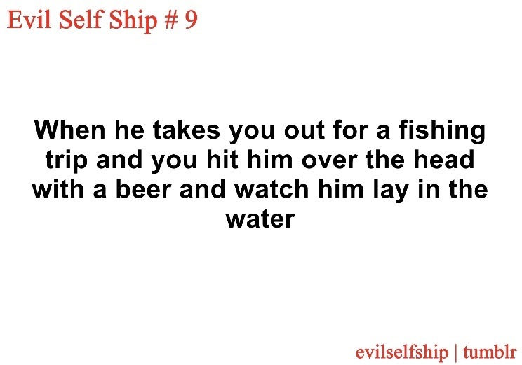
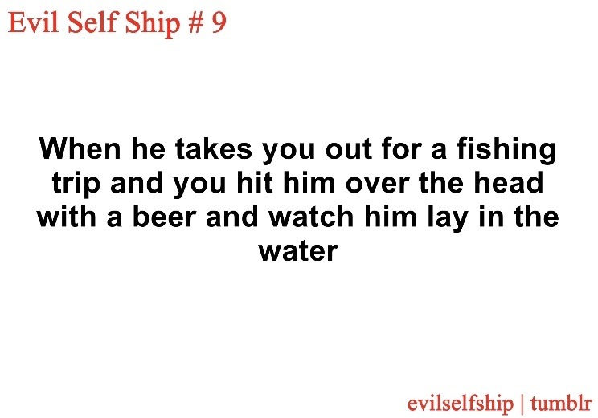

welcome to roman's internet apartment. watch where you step while in this forsaken place...
| NAME | Roman Medeis |
| AGE | 36 (lost count) |
| NATIONALITY | viera - veena |
| ADDRESS | mizzenmast inn, limsa lominsa |
| OCCUPATION | unemployed, does odd jobs, bodyguards |
| TALENT | running away |
| CHARM POINT | mole under his lip |
| LOVES | money, fine alcohol, cheap thrills |
| LIKES | tobacco, luxury goods, rumors, nighttime |
| DISLIKES | entitlement, sailing |
| HATES | boredom, clingy types |
| VICES | covetousness, alcoholism, gambling, laziness |
| VIRTUES | good listener |
| VALUES | personal freedom |
| DISDAINS | servitude |
| HEART'S DESIRE | ??? |
| #e7c7b3 | #482930 |
| #5b642c | #b3bf71 |
| #27273a | #464664 |
| #181722 | #262136 |
Because I longed for eternal life, I went to bed with harlots and drank for nights on end. In the morning, to be sure, my mouth was filled with the bitter taste of the mortal state. But, for hours on end, I had soared in bliss... Day would come softly to throw light on this disaster and I would get up and stand motionless in a dawn of glory.
ffxiv-specific background
Roman grew up in the isolated mountains of the Skatay Range in a little village. His brother had filled his head with stories about the world beyond the range, so when Roman became strong enough he descended the mountain and made his way towards Dalmasca. This journey lead him to meet the early Restistance fighters in Bozja and they compelled him into joining their cause. But after the reality of his situation hit him, Roman realised he wanted to do something more with his life than fight in a losing war. He deserted one night and boarded a ship as a stowaway- only to be discovered by the sailors soon after. He begged for his passage and was forced to work for his way. Despite the circumstances surrounding it, his work as a ship's hand was pleasureable and Roman found himself drawn to the freedom of travelling the sea; for many years after his conscription had ended, he chose to keep working onboard. He sailed around the world for many years; but the long voyages were ill suited towards his hotblooded nature and the days blended together, becoming unidentifiable and indistinct. One day he went ashore and, feeling the toll the years had taken on him, swore to live an easygoing life. But the lax lifestyle ashore is very different from the lifestyle he had lived at sea; he quickly blew threw all his money indulging his expensive whims and couldn't sit still in a single place for long for all the trouble he brought. Nowadays he mostly lingers around Limsa Lominsa, watching the crowds on the lower decks or fishing off the docks.Roman is a self serving and unsympathetic individual and is more often tolerated than liked. He is fairly self aware, but remains unbothered about the way that others see him, almost seeming offended by the notion he could be any other way. Even if he doesn't outwardly show it, he enjoys having company and is usually found in places where lots of people gather. His love for scandals keeps him in the know and he is a storyteller when it serves him.
Because his spending priorities are all over the place he is often caught up in schemes to make quick cash. Roman is shameless and and does what he has to in order to see his business through. He is at his most extreme when he believes that he has nothing to lose. The thrill of trying to survive fufils him. Has horrible luck but loves to take chances anyways.
He is very self-assured and intuitive, giving a brief impression of trustfulness. His loyalty is ultimately to himself, but it does serve him to build rapport and trust with people he has respect for, even if it takes a bit of work. when he finds himself in over his head he has no problem relying on others for assistance. He is curious and interested in learning new information and secrets, leading him to travel.
- he has travelled the world extensively, but never paid much attention to the names of places he sailed to. some of the fantastical places he's claimed to have seen really do exist, but he would never be able to identify them on a map. his vague details make him seem like more of a liar than he is.
- casuses no issues at the gold saucer despite his strained history with management there. he doesn't win anything because he doesn't want to attract too much attention to himself there.
- he has a tattoo across his back he has no memory of getting. he hates the idea that everyone except for him can see the tattoo and always tries to keep it covered up.
- enjoys the smell of cologne and wears fine scents to attract women. unaware that his smoking habit mixes the smells together in an unpleasant way.
- won back his family ring after selling it to make ends meet. despite the fortune of this event he has believed the ring to be cursed ever since.
- forgetful when it comes to owing money

MONEY
METHODS
METHODS
- spend like you're rich as proof you believe in your dream
- the lottery is one of the most reliable methods providing a large payout with a small entry fee. exploit this system by buying a lot of tickets to win more.
- don't be scared to lose your money in a bet because all it takes is one big payout to get all of it back
- remember that everything good in your life is tied to money and it will make you appreciate money even more.
- desperation is the state of being when the mind is free of all unnecessary thoughts and can make its best decisions
your next hand is...


 
